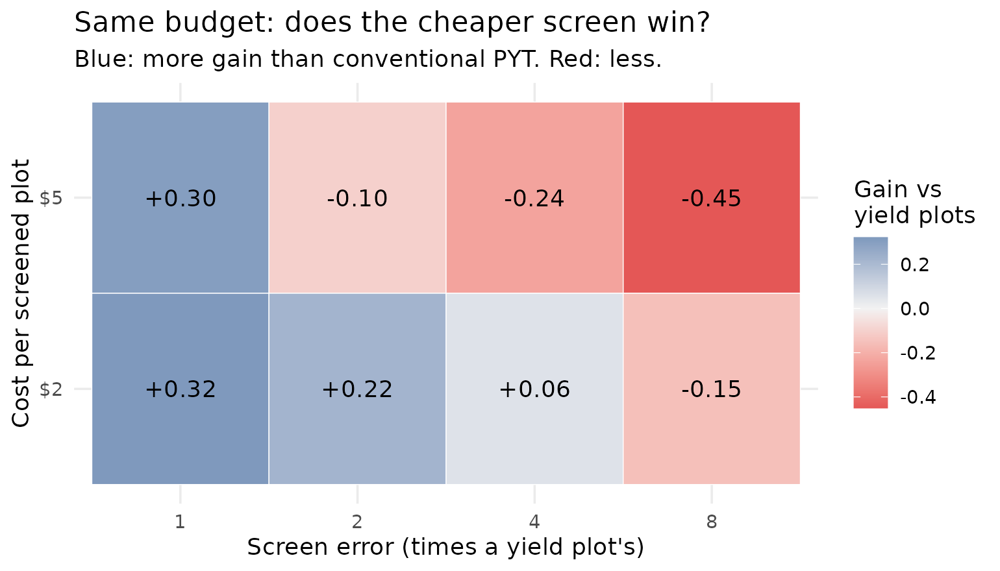
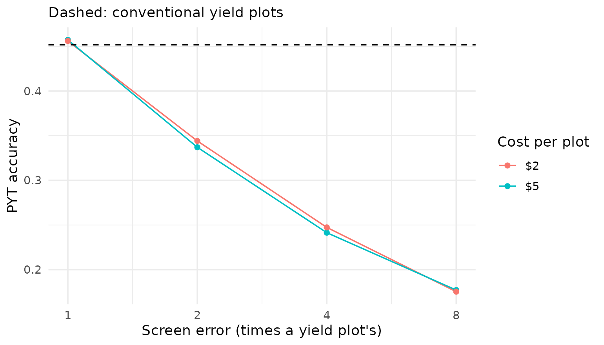

When does a new phenotyping tool pay off?
Source:vignettes/articles/technology-break-even.Rmd
technology-break-even.RmdNew phenotyping tools, such as drone imagery, canopy sensors or yield prediction from spectral data, usually make measurements that are cheaper but noisier than harvesting a yield plot. Whether a tool is worth adopting comes down to a trade. The money saved per plot lets you test more lines, and the extra noise makes each line’s ranking less accurate. Simulation lets you find the break-even before buying the equipment: how accurate does the tool have to be at a given price?
Setting up the comparison
In line_pipeline(), every line is tested in a
preliminary yield trial (PYT). We imagine replacing the PYT’s yield
plots with a drone-scored screen. Two arguments describe the tool:
-
pyt_plot_cost: the cost per PYT plot. Conventional yield plots cost 15 dollars here. -
pyt_error: how many times larger the screen’s error variance is than a yield plot’s. A value of 1 means as good as harvesting, and 4 means four times noisier.
To compare fairly, every design gets the same budget per cycle. The conventional program makes 15 lines per cross. A cheaper screen frees money for more lines per cross, which we work out from the pipeline’s costs:
budget_lines <- function(pyt_plot_cost) {
# Per-cycle money left for lines after crosses (30 x $25) and the AYT (80 lines x 8 plots x $15):
per_line <- 3 * 2 + pyt_plot_cost # SSD for 3 generations at $2 + one PYT plot
floor((19800 - 30 * 25 - 80 * 8 * 15) / (30 * per_line))
}
designs <- expand.grid(pyt_plot_cost = c(15, 5, 2), pyt_error = c(1, 2, 4, 8))
designs <- designs[!(designs$pyt_plot_cost == 15 & designs$pyt_error > 1), ] # yield plots: error 1 only
designs$progeny_per_cross <- budget_lines(designs$pyt_plot_cost)
designs
#> pyt_plot_cost pyt_error progeny_per_cross
#> 1 15 1 15
#> 2 5 1 28
#> 3 2 1 39
#> 5 5 2 28
#> 6 2 2 39
#> 8 5 4 28
#> 9 2 4 39
#> 11 5 8 28
#> 12 2 8 39The first row is today’s program. The others are drone screens at three prices and four levels of accuracy, each making as many lines as the same budget allows.
pipeline <- line_pipeline(
pyt_plot_cost = tune(), pyt_error = tune(), progeny_per_cross = tune(),
n_crosses = 30, n_ayt = 80, n_parents = 20, cycles = 2,
founders = asr_founders(n_chr = 10, seg_sites = 100)
)
res <- tune_grid(pipeline, sim_replicates(10, seed = 1), grid = designs,
metrics = sim_metric_set(release_gain, accuracy, cost))Each design’s total cost over the two cycles stays within a few hundred dollars of the conventional program’s:
collect_metrics(res, type = "wide")[, c("pyt_plot_cost", "pyt_error", "progeny_per_cross", "cost")]
#> # A tibble: 9 × 4
#> pyt_plot_cost pyt_error progeny_per_cross cost
#> <dbl> <dbl> <dbl> <dbl>
#> 1 15 1 15 39600
#> 2 5 1 28 39180
#> 3 2 1 39 39420
#> 4 5 2 28 39180
#> 5 2 2 39 39420
#> 6 5 4 28 39180
#> 7 2 4 39 39420
#> 8 5 8 28 39180
#> 9 2 8 39 39420The break-even map
m <- collect_metrics(res, type = "wide")
baseline <- m$release_gain[m$pyt_plot_cost == 15]
drone <- m[m$pyt_plot_cost < 15, ]
drone$relative <- drone$release_gain - baseline
ggplot(drone, aes(factor(pyt_error), factor(paste0("$", pyt_plot_cost)), fill = relative)) +
geom_tile(colour = "white") +
geom_text(aes(label = sprintf("%+.2f", relative))) +
scale_fill_gradient2(low = "#E45756", mid = "grey95", high = "#4C78A8", midpoint = 0) +
labs(x = "Screen error (times a yield plot's)", y = "Cost per screened plot",
fill = "Gain vs\nyield plots", title = "Same budget: does the cheaper screen win?",
subtitle = "Blue: more gain than conventional PYT. Red: less.")
ggplot(drone, aes(pyt_error, accuracy, colour = factor(paste0("$", pyt_plot_cost)))) +
geom_line() + geom_point() +
geom_hline(yintercept = m$accuracy[m$pyt_plot_cost == 15], linetype = 2) +
scale_x_continuous(trans = "log2", breaks = c(1, 2, 4, 8)) +
labs(x = "Screen error (times a yield plot's)", y = "PYT accuracy", colour = "Cost per plot",
subtitle = "Dashed: conventional yield plots")
How to read the map: a cell is blue when the money saved, spent on more lines, buys more gain than the accuracy lost costs. Moving right (noisier), the advantage shrinks and then turns red. The column where it changes sign is the accuracy the tool must reach at that price. In this program a 5 dollar screen has to be nearly as accurate as a yield plot (less than about twice its error variance), while a 2 dollar screen can be about four times noisier and still break even. Differences of about one standard error (here roughly 0.17) are within simulation noise. Treat pale cells as ties, and run more replicates if a decision hinges on one.
Make it yours
- Measure your candidate tool’s error against harvested yield on a few
hundred plots, express it as a multiple of your plot error variance, and
use that as
pyt_error, perhaps as a scenario with a range. - Put in your own costs, including the equipment spread over its lifetime.
- A tool that measures a correlated trait rather than yield
itself (canopy cover, maturity date) is better modeled with two traits.
Write that pipeline with
alphasim_program()and asetupfunction inasr_founders()that adds correlated traits.